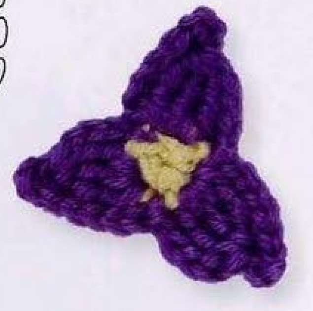
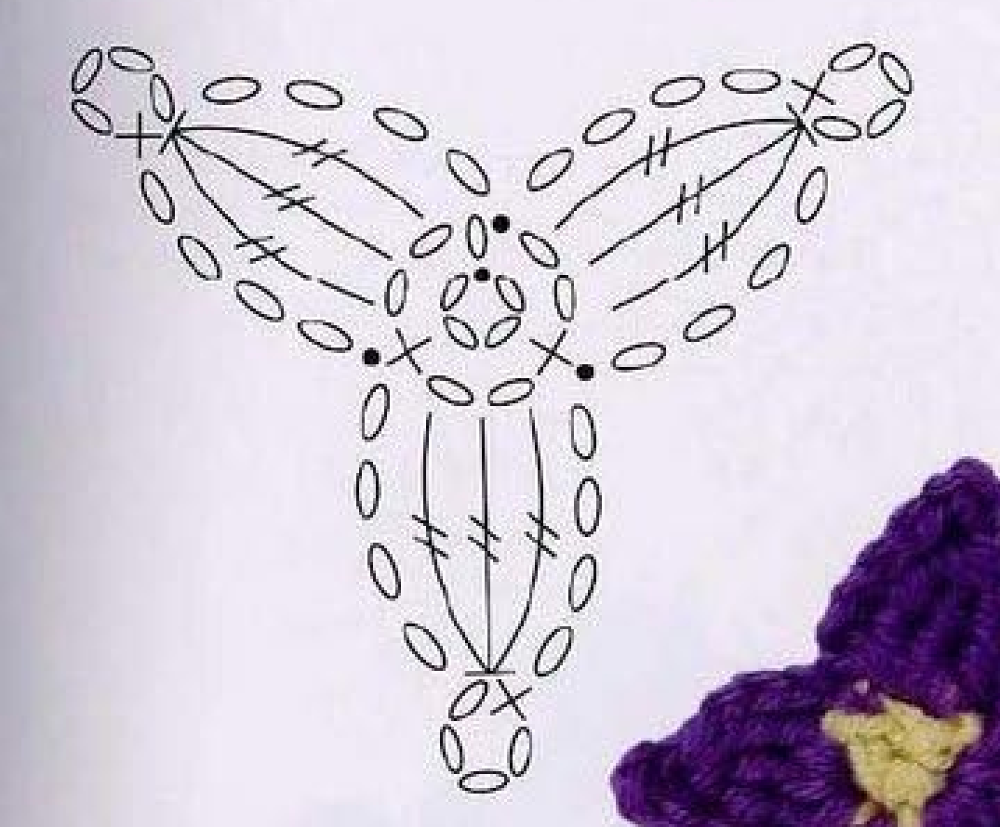
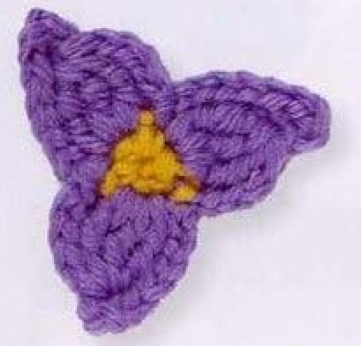
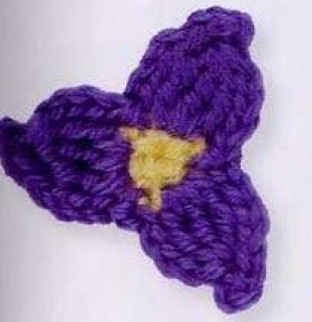
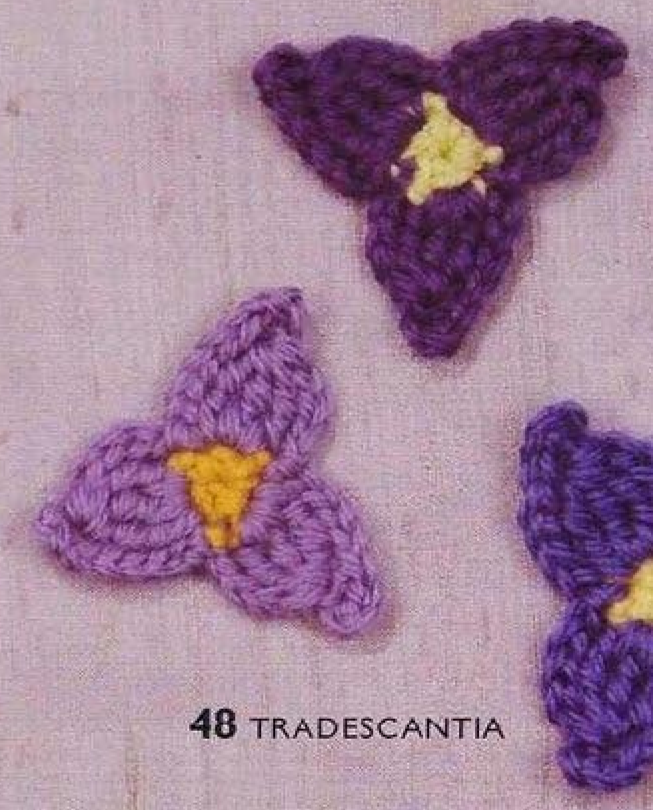

A crochet Tradescantia has three purple petals arranged around a small yellow center. Each petal combines a tall stitch cluster with chain edges and a little loop at its tip. This guide follows pattern 48 in Lesley Stanfield’s 100 Flowers to Knit & Crochet, translating the source UK terms into US terms and retaining its two-round construction, color change, and finishing join.

Key Takeaways
- Use DK wool in yellow A and purple B.
- Begin with a four-chain joined ring.
- The yellow center has three counted stitch positions and three chain-two spaces.
- Each purple petal uses a three-stitch US treble cluster in one center space.
- Three chain-four sections form the petal edges and its small tip loop.
CROCHET TRADESCANTIA FLOWER PATTERN
Project: One three-petal wool flower with a yellow center and purple clustered petals. These directions preserve the original sequence in US terminology. Specifications absent from the source are marked as such; handling suggestions are added practical guidance.
| Skill level | Not specified in the entry. Practical guidance: experience with tall-stitch clusters and small round joins is helpful. |
|---|---|
| Base size | One three-petal flower. Finished diameter and height are not specified. |
| Yarn | DK wool: yellow A and purple B. |
| Quantity | Not specified. Keep both colors available for the first-round closing join. |
| Hook and gauge | Not specified. Choose a hook suited to your DK wool and make a sample. |
| Notions | Scissors, a blunt yarn needle, and an optional removable marker. |
| US abbreviations | ch = chain; sc = single crochet; sl st = slip stitch; tr = treble crochet; cluster = unfinished stitches completed together in one base space. UK dc = US sc; UK dtr = US tr. |
| Foundation | With yellow A, ch 4. Join to the first chain with a slip stitch to form a ring. |
| Round 1 (RS) | Ch 3. Work sc, ch 2 into the ring twice. Using purple B, sl st into the first of the starting ch 3. Count three stitch positions and three ch-2 spaces: the opening ch 3 supplies the first stitch position plus its space. |
| Round 2 | Continue with purple B. Repeat ch 4, a 3-stitch tr cluster in the next ch-2 space, ch 4, sc into the top of that cluster, ch 4, sl st into the next center stitch position three times. The final slip stitch goes into the joining slip stitch of Round 1. Fasten off. |
| Finishing | Secure the ends on the back and arrange the three petals without pulling their chain tips tight. |
Understand the Three-Petal Structure
The yellow center establishes three spaces for the purple petal clusters. Each petal is worked in one of those spaces, and a slip stitch anchors it at the next center position. The three repeats produce the triangular outline seen in the finished photographs. There is no additional petal row, separate stem, leaf, or sewn center in this source entry.
The petal has three distinct chain sections. The first rises from the center toward the cluster, the second forms a loop above the cluster top, and the third returns toward the next center anchor. The single crochet into the cluster top closes the little tip loop. Omitting that stitch or one of the chain sections changes the petal outline.
A cluster gathers the tops of three tall stitches while their bases share one space. This is different from a decrease worked across three separate base stitches. The distinction matters here because each petal body belongs in one yellow chain space. Spread the finished petal gently and you should see its clustered body framed by the chain edges.
Choose DK Wool and Prepare the Colors
The source specifies DK wool in yellow and purple. Choose two yarns of comparable thickness so the center and petal round sit together naturally. The photographs show more than one purple shade, but the written color roles remain yellow A and purple B. A shade variation is different from changing the construction or adding another color round.
No hook size, yardage, gauge, or finished measurements are given. Choose a hook that allows the tall cluster stitches to move freely, then assess the result with your own wool. A very tight cluster can be difficult to close, while loose chains can make the edges floppy. Start with even tension rather than trying to reach a size that the pattern never specifies.
Have scissors and a blunt yarn needle ready for the finishing ends. An optional marker can identify the first chain of the center round. Keep purple within reach before closing yellow because the color change is made at that joining slip stitch. This avoids an unnecessary extra yellow join or a new purple stitch that is not in the source sequence.
Specification note: The original gives DK wool, two colors, and the stitch sequence. Hook size, gauge, quantity, and finished dimensions are not supplied. Any sample-based choices are practical guidance.
Translate the UK Terms and Read the Chart

The book’s UK double crochet is US single crochet, written sc here. Its UK double treble is US treble crochet, written tr here. The three-stitch double-treble cluster in the source therefore becomes a three-stitch US treble cluster. Do not replace it with a US double-treble cluster, which would use a taller stitch and change the petal proportions.
In the chart, the small central ring is the foundation. The yellow round creates three short stitch positions separated by chain spaces. The grouped tall symbols in each petal converge at a single top, showing the cluster. The chains around those tall symbols show the two side edges and the little loop at the outer tip.
Read the placement sequence together with the written instructions. A chain-four segment is not an instruction to skip four stitches in the yellow center. It is newly made chain that shapes a petal section. The cluster goes into the chain space, the single crochet goes into the cluster top, and the final slip stitch goes into the next center position.
Step 1: Make the Yellow Foundation Ring
With yellow A, make four chains. Check that the short chain has not twisted, then slip stitch into the first chain to join it into a ring. Work the next round into the opening of that ring rather than separately into all four foundation chains. Hold the beginning tail clear of the hook so it is not mistaken for an extra strand to count.
The chain-ring foundation is part of the source. A magic ring would be a substitution rather than the given start, and tightening it completely could change the center appearance. Keep the four-chain joined ring when making the source-based version. If the foundation is difficult to work into, adjust your chain tension on a new sample instead of changing the count.
Step 2: Establish Three Center Spaces
With the right side facing, chain three. This opening group represents the first short stitch position and its following chain space. Work one US single crochet into the ring, then chain two. Work one more single crochet into the ring, then chain two again. These two worked stitches join the opening chain group to establish the threefold center.
The written repeat is worked twice, not three times after the opening chains. If you add three sc-and-chain-two groups, you create an extra position and an extra space. Before joining, identify three spaces around the center: the space within the opening chain group and the two spaces formed by the newly made chain-two sections.
Using purple B, slip stitch into the first of the starting three chains. The join uses the first chain rather than the top chain because the opening group includes both a stitch-position equivalent and a space. Keep the first-chain location marked if needed. The purple loop on the hook is now ready to begin the petal round.
Center checkpoint: Round 1 has three counted stitch positions and three chain-two spaces. The starting chain group contributes to that total; it is not followed by three extra single crochets.
Step 3: Start the First Purple Petal
Continue with purple B and chain four. Locate the next yellow chain-two space. This is where all three legs of the first US treble cluster are worked. Do not insert those legs into the neighboring single crochet or spread them across different center stitches. Their shared base space forms the compact body of the petal.
For the first partial treble, yarn over twice, insert the hook into that space, yarn over, and draw up a loop. Yarn over and draw through two loops, then yarn over and draw through two loops again. Leave the final treble completion unfinished. The remaining loop stays on the hook while you begin the next leg.
Make two more partial treble legs in the same space in the same way. When all three legs are ready, yarn over and draw through the four loops remaining on the hook. This completes the cluster with a shared top. Check that there are three legs in one space, not three separately finished treble stitches.
Step 4: Form the Tip Loop and Return Edge
After completing the cluster, chain four. Work one US single crochet into the top of that same cluster. This brings the chain-four section back to its starting point and forms the little loop at the petal tip. Keep the top identifiable while making the chains; pulling on the loop can make the small attachment location harder to see.
Chain four again, then slip stitch into the next center stitch position of Round 1. This is the return edge and lower anchor of the petal. The petal now has a tall clustered body, chain sides, and a chain loop at the tip. Arrange it gently so the tip loop is visible rather than folded behind the cluster.
The single crochet at the cluster top is an actual stitch in the recipe. It is not a slip stitch or an extra center stitch. Also distinguish the cluster-top location from the yellow center anchor: the top attachment shapes the tip loop, while the final slip stitch returns the petal to the center. Confusing these two points changes the outline.
Step 5: Complete the Other Two Petals
Repeat the full petal sequence in the next center space: chain four, make a three-stitch US treble cluster in that space, chain four, single crochet into the cluster top, chain four, and slip stitch into the next center position. Repeat once more for the third petal. Work each cluster in its own next unused space.
For the final return, the source places the ending slip stitch into the joining slip stitch of Round 1. This returns the sequence to its beginning. Do not add a fourth petal because another small opening appears near the join. Count the completed petal bodies and confirm that the three original center spaces each contain one cluster.
A useful audit is three clusters, three tip loops, and three petals. Every petal repeat contains three chain-four sections. Those chain sections serve different purposes, so counting only visible side edges does not check the tip loop. Examine one complete repeat at a time if the third petal looks unlike the first two.
One Petal, Three Chain Sections
The first chain-four rises, the second chain-four loops back into the cluster top, and the third chain-four returns to the center. Keep that order unchanged. It explains why a petal needs more than a cluster and two side chains.

Fasten Off and Arrange the Flower
Fasten off after the final joining slip stitch. Secure the purple and yellow ends on the back using a yarn needle, preserving the small center and the petal anchors. Avoid drawing a tail through a chain tip in a way that shortens the loop. Work the ends through established stitches without pulling the triangular flower into a tight cup.
Lay the flower on a flat surface and separate its three petals. The source does not prescribe pressing or exact blocking measurements for this entry. If you choose to dampen or shape it, follow the wool-care instructions and test the method first. Gentle finger arrangement can help you judge the structure before making further handling choices.

Troubleshoot Placement and Petal Shape
Why do I have four center spaces?
Check the first-round repeat. After the starting three chains, the sc-and-chain-two sequence is worked twice. The opening group already supplies one counted position and its space. An extra repeat creates an extra space and can encourage a fourth petal, which does not belong to this Tradescantia pattern.
Why is a petal much taller?
Confirm the UK-to-US translation and count starting yarn overs. The source UK double treble cluster is US treble, with two yarn overs per leg. Using US double treble would make it taller. Also compare the three chain-four sections; a mistaken chain count can affect the tip and side edges even when the cluster is correct.
Why does the tip loop disappear?
Locate the chain-four section immediately after the cluster and its single crochet back into the cluster top. If that section was omitted, the petal has no separate tip loop. If it is present but hidden, arrange it before tightening or weaving in the ends. A correctly formed loop may simply have folded behind the petal body.
Why will the cluster not close neatly?
Check that all three treble legs were left unfinished until the final shared draw-through. Completing each treble independently makes three ordinary stitches instead of a cluster. Work slowly with even tension and keep the partial loops on the hook. If a loop is too tight, correct that leg before forcing the final closure.
Customization and Suggested Applique Uses
The source photographs show purple shade variations, including a lighter sample. You can choose a different purple while retaining yellow A and the original construction. Other palettes are personal adaptations. Changing yarn thickness or hook can alter size, but no graded dimensions are given. Measure your own sample after arranging its petals if it must fit a particular surface.
Suggested decorative uses include a flower on a fabric panel, bag, or handmade accessory. These uses are added ideas rather than projects supplied with the Tradescantia entry. Position the motif before sewing and attach through secure center and base points so the tips stay free. Avoid stitching across the tip loops if you want their open shape to remain visible.
Variation guidance: Keep three center spaces and three petal repeats when testing colors. Extra petals, added layers, leaves, or a different foundation should be described as changes to the original pattern.

Tradescantia at a Glance
- DK wool in yellow and purple.
- A four-chain joined ring and three center spaces.
- Three purple US treble clusters, one in each space.
- Three chain-four sections per petal, including a small tip loop.
- Final slip stitch into the first-round join, followed by secure finishing.
Conclusion
Tradescantia is a compact flower whose outline depends on precise placement. Count the center spaces, form each cluster in one space, and keep the tip-loop attachment separate from the return to the center. Use the complete pattern card while working and compare the source chart whenever a placement needs clarification. Click the Pin to return to the three-petal pattern and its finished-flower photographs.
Source and Tags
Source: Lesley Stanfield, 100 Flowers to Knit & Crochet, pattern 48 Tradescantia. Instructions and chart appear on printed page 71, PDF page 65 in the supplied scan; directory photographs appear on printed page 29, PDF page 24. Source images show completed flowers, not intermediate steps. This guide preserves the recipe in US terms and labels extra handling and use suggestions as practical guidance.
Crochet TradescantiaThree-Petal FlowerPurple WoolTreble ClustersCrochet AppliqueUS Crochet Terms